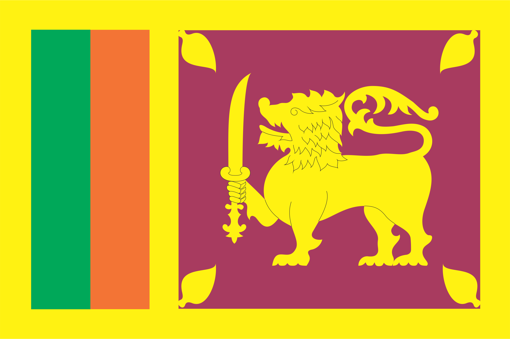
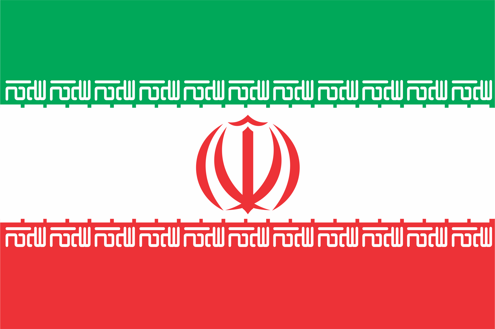
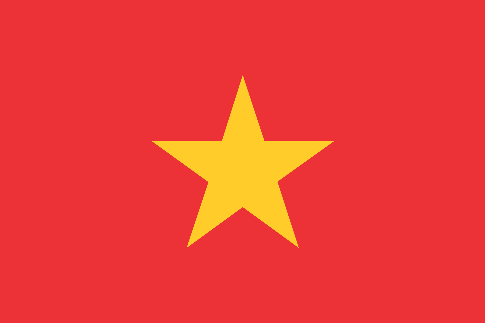

Китай по праву считается колыбелью мировой чайной культуры, а чайное дерево, которое родилось в провинции Юньнань, насчитывает историю свыше 4000 лет. Главной особенностью производства зеленого сорта чая является технология его обработки. Свежесобранный чай подвергают просушке под открытым небом. Когда листья становятся мягкими, их термически обрабатывают в щадящем температурном режиме. Это позволяет сохранить зеленый цвет, свежий аромат и природные лечебные свойства. Зеленый – это листовой чай из китайской провинции Хунань. Он выращен на плантациях, расположенных на высоте более 1000 метров над уровнем моря. На такой высоте чайные кусты дают некрупные, очень нежные листья, которые после обработки приобретают особенный серебристый оттенок, а готовый чай имеет освежающий, выразительный вкус с легким цветочным ароматом.
Чай в Индии произрастает на террасах, которые кольцами опоясывают склоны гор. Климат в этих местностях очень влажный и жаркий. В такой своеобразной природной теплице чай приобретает особую насыщенную терпкость и крепость, которая отличает индийский чай. Чай Особо крепкий – это уникальная композиция гранулированного чая с лучших плантаций Индии, сочетающая в себе особую крепость насыщенного вкуса.

Шри-Ланка прочно удерживает третью позицию по производству чая в мире. Горная местность и климат создали для этого все необходимые условия. Основным сортом чая, производящегося на Цейлоне (чайные кусты выращиваются на Шри-Ланке, но чай называется цейлонским), является черный. Цейлонский чай ценится во всем мире за его мягкий вкус и неповторимый аромат. Классический, гармоничный вкус цейлонского чая дополнен фруктами и ягодами, чтобы подарить воплощение вашим самым теплым летним мечтаниям.
Чай в Кению завезли англичане, взяв его со своих плантаций в Индии. Природные условия Кении идеальны для чайного дерева: красные почвы вулканического происхождения, горные массивы, тропический климат и близость экватора обеспечивают стабильное качество чая. Все плантации в Кении расположены высоко в горах, от 1500 до 2700 метров над уровнем моря, поэтому кенийский чай ценится в мире как экологически чистый. Чаще всего листья кенийского чая обрабатываются машинным способом, который включает три стадии: 1.Прессование листьев; 2.Измельчение; 3.Скручивание в гранулы. Вот почему чай Классический отличается сбалансированным, гармоничным вкусом с легким терпким оттенком, приятным ароматом и неповторимым красноватым цветом настоя.

Иранский чай явлается важной составляющей страны. Иран занимает седьмое место в мире по производству чая. Лучшим сортом иранского чая считается лахиджанский. В шахрестане Лахиджан, в 40 км к востоку от центра остана Гилян, располагается более 5000 га чайных плантаций. В чаеводстве заняты около 10 000 семей, поэтому Лахиджан известен как «город чая». Дело в том, что начало чаеводству в Иране было положено в 1901 г. именно в Лахиджане трудами Хаджж Мохаммад-мирзы Кашеф ас-Салтане Чайкара. Довольно быстро эта отрасль распространилась в самом Лахиджане, а также в других районах южного побережья Каспийского моря. Среди достопримечательностей Лахиджана — Иранский музей истории чая.

Вьетнамский чай существует уже более трёх тысяч лет. Чайная культура во Вьетнаме занимает важное место в жизни вьетнамцев. При появлении гостя в помещении ему вначале предлагается чашка чая. Отказ, даже вежливый, воспринимается как оскорбление. Во Вьетнаме производится много первосортного черного чая, и страна является одним их ведущих экспортеров этого напитка. Однако, свой черный чай вьетнамцы почти не пьют, отдавая предпочтение, в основном, зеленому. Произведенный там черный чай имеет для коренного населения очень терпкий вкус, который приходится по душе нашему потребителю своей полнотой и насыщенностью вкуса. Отборный черный листовой чай собран с самых верхних листков чайного дерева для более мягкого, сбалансированного вкуса и насыщенного аромата.